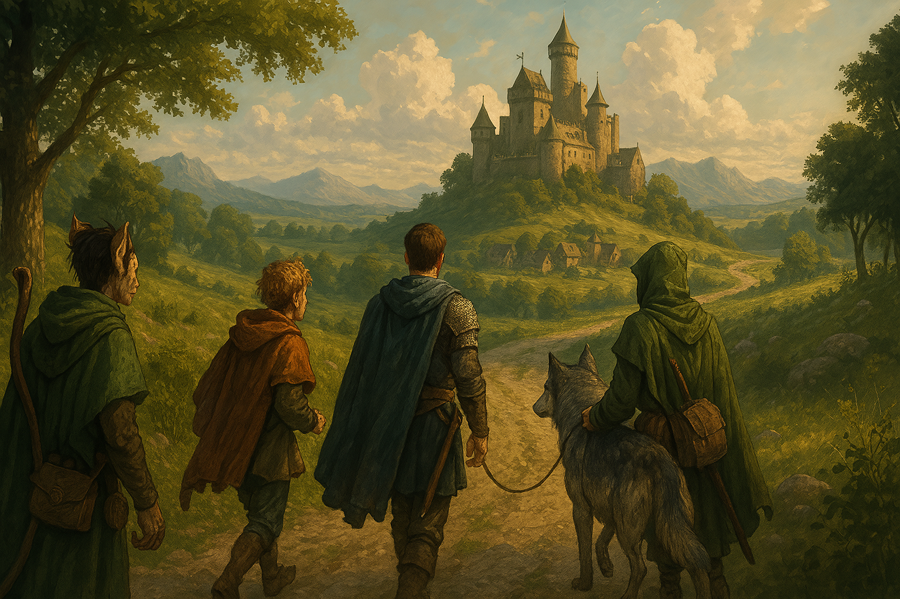

Chapter 3: Clone of...... Us?
Lurking Dangers


Lurking Dangers
15048.12.05
一早，圖伊特就醒了。看見依偎在自己身上的羅特，他十分好奇，以學者的角度觀察並記錄。他想起昨日羅特提到自己擁有魅魔的血統，便嘗試去思考，他的種種行為，是否是因為他的血統導致的？
一段時間後，冒險者們都甦醒了，紛紛下樓吃早餐。馬可斯和瑪莉安似乎都不在樓下。大家邊吃邊討論著接下來的計畫，他們預計先循著之前往瑟巴諾的路，一路追查，尋找泥人可能的蹤跡。
吃飽後，華生前往二樓拜訪馬可斯，羅特和圖伊特則聊著羅特小時候被拋棄的事，圖伊特如心理治療師般的開導，讓羅特心裡暖了許多。
不久後，圖伊特暫時離開，羅特便拿出了一些木頭以及工具，開始雕刻他的小玩偶。芒果見狀也十分有興趣，和羅特借了工具和材料來試試。羅特發現了芒果對此似乎十分有天賦。最終，芒果雕出了一個小盒子，裝好他放在頭上的金羽毛，而盒子上似乎有個印記，以芒果的說法，是宇宙神的符號。
華生和馬可斯詢問了關於昨晚提到線人的事，馬可斯表示他已經聯繫好了他的線人，最早明天晚上會到麥克嵩。他提及這名線人是名妖精，身穿全綠，身邊還有隻有異色瞳的狼，如果在麥克嵩看到他，可以主動去和他搭話。
在華生離開辦公室前，馬可斯喚住了他，表示有重要的事情想和他討論。這時，馬可斯拿出了一些異色的糖果，裝到一個盤子內，供華生享用。華生沒有多想，拿了一顆，接著他發現自己似乎吃到了吐真劑。馬可斯詢問了他關於沃瓦倫的惡魔、他的夥伴背景，以及這些夥伴的宗教信仰相關的問題，同時也詢問了他對於蜘蛛神教、月神教，和拉索斯教的想法。在得到了華生的答覆後，他表示很不好意思，需要用這種手段，得到他想知道的資訊。最為致歉，他把剩下在盤子上的糖果包裝起來，送給華生，並教他分辨是否為吐真劑的作法：這些糖果中，會反光的是真的糖果，不會反光的則是吐真劑。
當華生和圖伊特回來時，發現羅特不見了。芒果表示自己剛剛很認真在雕刻，也沒注意到他消失。這時，一樓的後沒被推開，羅特拿著兩袋食物走了進來。他邀請夥伴們享用他剛剛去找了僕人，在餐廳自己做的餅乾。餅乾倒了出來，看起來讓人食不下嚥—原料的昆蟲形狀太過完整，讓人很不放心。但是吃起來，卻是蠻好吃的。羅特將其中一袋送給還在辦公室的馬可斯後，大家便準備出發。
循著對這個城市的印象，大家出了城門，往瑟巴諾移動。圖伊特沿路詢問路人是否有看到和他們長得很像的人，或是泥巴做的人，但他完全沒有得到答案。隨著瑟巴諾越來越近，路上已經沒有他們以外的人了，但似乎毫無泥人的蹤跡。羅特決定爬到樹上偵查，發現了遠處似乎有幾座可疑的小土堆。
圖伊特趕緊前往小土堆去，看起來總共有四個隆起。他拿起手杖用力戳了幾下，突然感到十分不舒服。抽起手杖，他看見自己的頭被插在手帳上，而且正在高聲尖叫。然而，這景象只有他自己看到而已。華生接過手杖，在其他幾個土堆上戳，卻發現僅有一個土隊底下似乎有東西。那東西，是他的頭被插在手帳上，也是高聲尖叫的狀態。對於眼前的怪象，兩人很是疑惑。同時，羅特發現麥克嵩的方向似乎有人接近，趕緊向華生和圖伊特發出警告。
從樹林旁走來的是兩名中年人，看起來像是一對夫妻，走在前頭的男子背著厚重的背包，女子則拉著一台拖車，上面似乎疊了兩個大木箱，並用布覆蓋著。隱身的羅特悄悄地靠近充滿未知的木箱，順手從中偷了一點錢。
當兩人經過轉角時，圖伊特和華生早已準備好，裝作沒事的和兩人搭話。這兩人自稱是來自麥克嵩，被當地的拉索斯主教吩咐帶著未知的行囊，要將這兩個木箱以及男子的背包帶到前方的城鎮，但他們一來不清楚自己攜帶的物品是什麼，也不知道前方到底是哪座城鎮。眼看兩人似乎沒有惡意，且自己也不清楚任務的細節，圖伊特和華生變聯手，以威嚇與說服的方法，讓他們自行拿出貨物。不看還好，他們這才發現背包內裝的是前任國王巴納沃二世的皇冠和玉璽。而木箱內的貨物更讓他們詫異。上層的木箱裝了不少錢幣，但下層的木箱，裝的卻是巴納沃二世的屍體。夫妻兩人滿臉惶恐，他們非常擔心會因為自己的行為而被判為叛國罪。
剎那間，夫妻兩人的額頭中箭，瞬間倒下。圖伊特和華生趕緊掏出武器準備應戰，躲在遠處的羅特也準備好偷襲了。兩名刺客在樹上舉著弓箭，同時快速地穿梭。然而在冒險者的合作與羅特的偷襲下，一名刺客瞬間死去，另一名則昏去了。
他們仔細搜索刺客身上的物品，推斷他們是由現任國王的母后瑪莉恩派來的。羅特也發現這兩名刺客用的箭矢上塗有毒液，因此從他們身上努力翻找出是否還有留存的毒藥可使用。
三名冒險者身邊突然多了五具屍體，此時該往何處走都不太對。經過討論後，決議讓華生和圖伊特將國王以外的屍體都把頭砍下，好讓華生後續可與他們溝通，並帶往瑟巴諾作為臨時藏身處；羅特則在圖伊特的夸塞魔陪伴下先回麥克嵩去通知馬可斯，並將馬可斯與線人一同帶到瑟巴諾，大家會合後再一起出發前往洛森王國。
快速朝著麥克嵩前進，羅特回到麥克嵩時已近傍晚。他在路上看見了與馬可斯描述的線人十分相似的人：一名身穿綠色的妖精，身旁跟著一隻大狼，羅特便與他攀談，得知他的名字叫拉里爾，他的狼叫蓋瑞。羅特帶著拉里爾和蓋瑞回到了馬可斯宅邸先行休息，同時等著馬可斯和瑪莉安回來。
羅特小心走上了二樓，發現伊醒著，正在看書，他便小心翼翼的靠近。伊看見他，淺淺的微笑，兩人相擁。羅特不斷說著和伊告別後發生的各種事，伊用心的聽著，不時微笑點頭，像看著自己的孩子一樣的疼愛眼神看著羅特。羅特不知不覺落下了眼淚。
然而，外頭竟然傳出了敲門聲。羅特開了門，發現一名他從沒見過的帥氣貴族男子站在門外。那名男子說著自己要找W伯爵，讓羅特滿滿的疑惑。語畢，自稱澤維爾的男子便自行走進了宅邸，當然也很自然地掉到了陷阱內。嘗試與像是來自不同星球的澤維爾溝通未果，羅特最終決定將澤維爾綁在二樓的柱子旁，至少讓他不會搗亂。
夜晚，馬可斯和瑪莉安回來了。大家一同來到了餐桌用餐，同時澤維爾也被鬆綁。他口中的W伯爵便是羅特認知的M伯爵馬可斯。馬可斯聽聞羅特說明華生和圖伊特的狀況，決定明日就帶著拉里爾一起出發前往瑟巴諾會合。
15048.12.06
拉著拖車，來到瑟巴諾，華生與圖伊特找到了一間看起來沒有被破壞得太嚴重的房子，便進入探索。他們發現裡面有兩具屍體，看起來和他們當時離開瑟巴諾時，發現被蜘蛛吸乾的屍體十分相似。同時，他們也找到了一個小雕像，造型是霍布的模樣，底下則刻有「夏庭森」和「弗萊迪」的字樣，但他們對這兩個字完全沒有概念。
不久後，兩人決定再深入城內探索。他們找到了一間看起來更漂亮的房子，一樓是倉庫，可以停靠拖車，二樓則是客廳。兩人在客廳探索了一番，並沒有找到類似的雕像。兩人也發現頭頂上的天花板似乎有個可以勾下來的板子。利用圖伊特的手杖，板子翻了開來，一層又一層的梯子翻了下來，兩人便小心翼翼地踏上三樓。
陽光灑落穹頂覆蓋的閣樓，木質的地板上空空如也，上方玻璃的縫隙，似乎隱約可看見蜘蛛網的造型。華生在角落發現了一個被蓋子蓋住的小台子，上面有排成正三角形的三顆圓形按鈕。經過測試，兩人發現右下方的按鈕可以將玻璃罩打開；左下方的將玻璃罩關起；正上方的，則是將玻璃罩染上漆黑的墨水，用途為何並不清楚。
兩人充滿困惑地回到二樓探索，這次他們分別找到了一些散落的筆記，但文字看不懂。圖伊特花了一點時間研究，發現筆記內都是寫些關於「時空穿越」的研究，以及非常少許關於蜘蛛神教的文字。筆記中提到，敘述者似乎有聽聞時空穿越的能力，並做了各種不同嘗試，卻始終沒有成功。正當圖伊特認真研讀時，華生聽見了頭頂傳來重擊聲，樓上瞬間變得非常黑暗。
圖伊特透過他的第三隻眼偵測閣樓，發現有一團和母親大人魂魄相當大小的靈魂，令他感到十分詫異。出於好奇，他小心翼翼地踏上階梯，卻同時在腦中聽見一個沒聽過的聲音，邀請他上來閣樓。
當圖伊特的視線跨過閣樓的地板，他看見一隻碩大而如收起爪子的貓掌，眼睛順著向上看，一頭他只聽聞過，但從沒見過的生物，矗立在眼前。史芬斯。華生也爬了上來，他從未見過也未曾聽說過這種生物。
在與史芬斯的溝通下，他們得知這頭史芬斯將這裡作為他的研究基地，白天飛到室外活動，夜晚回到這裡躲避與研究。至於選擇這裡的原因，單純是因為瑟巴諾已經是廢棄的城市，不會受到干擾，而且這個閣樓似乎在他來臨之前便已打造好，對他來說是現成的好地方。史芬斯正在研究穿越時空的方法，但到目前為止還沒有有用的進展，而二樓對史芬斯來說僅僅是作為紙簍，丟棄他沒用的筆記而已。
華生也好奇史芬斯是否知道他撿到的霍布雕像是否有什麼蹊蹺，因此遞給他雕像，讓他研究研究。
在圖伊特的呼喚下，薩姆拿了華生和圖伊特的錢，回到麥克嵩，帶了兩袋食物回來，三人以及史芬斯一同享用晚餐，吃飽後薩姆便又離開了。為了報答準備食物之恩，史芬斯也允諾幫他們一個忙，在兩人討論之下，決定請史芬斯載他們和羅特等人前往洛森王國。史芬斯答應後，兩人也回到二樓休息。
醒來後，羅特發現M伯爵正一絲不掛地從浴室走出，惹得他眼睛不知道該看哪裡。他也發現馬可斯房內似乎還有另一人在裡面。羅特趕緊先到一樓去故作鎮靜。
不久後，拉里爾下樓了，兩人簡單的聊了一下天。在與M伯爵說好中午左右回來一起出發去瑟巴諾後，羅特便帶著拉里爾一起到市中心採買需要的物品。羅特為拉里爾挑選了兩件袍子，一件卡其色的和一件灰色的，讓他至少不會那麼誇張的顯眼。一路上，拉里爾也解惑了羅特買的魔法笛子。經過拉里爾的吹奏，一個妖精的靈魂從笛子飄了出來，拉里爾和他聊了一陣子後，妖精便回到笛子內去了。拉里爾和羅特表示那是他認識的人，靈魂似乎被封印在笛子內了。他承諾羅特會教他學會妖精語，也教他如何吹奏這隻笛子，讓羅特很開心。但讓羅特更開心的是拉里爾變身成一隻巨大的蜘蛛，讓他彷彿再次見到了母親大人一般。
回到M伯爵家後，大家準備好行囊，羅特也和伊道別（瑪莉安表示伊還需要一些休養，等休養到一定程度後他們會再趕上）。馬可斯準備了兩匹馬，三人與一隻狼便出發前往瑟巴諾。
一早醒來，圖伊特和華生依稀記得昨晚和薩姆一起用餐的事，但是對於史芬斯相關的是除了筆記以外全然忘記。似曾相識的錯覺下，圖伊特以手杖打開了通往閣樓的門。踏上閣樓，圖伊特看見了一頭倒地的巨獸，一隻沒了心跳的史芬斯。在華生的調查下，發現這頭他從沒見過的史芬斯，手中竟然握著他前一天撿到的霍布雕像，讓他感到非常困惑。兩人也判斷這頭史芬斯應該是死於魔法，但這魔法讓他看起來像是中毒一樣。
華生想起昨天昏迷的刺客，發現他似乎呈現假死狀態—沒有任何生命跡象，但圖伊特的第三隻眼卻能看見他的靈魂。經過搜身後，他們發現刺客的背上竟然貼了一道符咒。符咒撕下來後刺客猛然甦醒，並與圖伊特求情。經過華生與圖伊特的討論，決定放他走，但刺客還沒踏出房子外，便應聲倒地。圖伊特趕往門口，試圖判斷刺客發生什麼狀況，手一碰上他，便在腦中聽見瑪莉恩的聲音，似乎是透過遠距離的魔法將刺客殺死。
兩人回到閣樓，試圖解決眼前的諸多疑惑。他們決定呼喚薩姆，華生趁機將貼在刺客身上的符咒貼到薩姆的背後，薩姆突然像假死一樣倒地。確認後，華生便把符咒撕了下來。此刻一樓傳來開門的聲音。圖伊特朝下一看，發現是羅特等人抵達了。
眾人對這兩天發生的狀況簡單討論後，便在拉里爾的帶領下，準備出發前往洛森王國，尋找母親大人的蹤跡。
15048.12.05
Tweeter woke up early in the morning. Seeing Lott nestled against him, he was very curious and observed and recorded it from a scholar's perspective. He remembered that Lott mentioned yesterday that he had the blood of a succubus, and tried to think about whether his various behaviors were caused by his blood?
After a while, the adventurers all woke up and went downstairs to have breakfast. Neither Marcus nor Marianne seemed to be downstairs. While everyone was eating, they discussed their next plan. They planned to follow the road to Sebano and trace it all the way to find possible traces of the clay figures.
After eating, Watson went to visit Marcus on the second floor. Lott and Tweeter chatted about Lott being abandoned when he was a child. Tweeter's guidance like a psychotherapist made Lott feel a lot warmer.
Soon after, Tweeter left temporarily, and Lott took out some wood and tools and started carving his little doll. Mango was very interested when he saw it, and borrowed tools and materials from Lott to try it out. Lott discovered Mango seems to be quite talented at this. Finally, Mango carved out a small box to contain the golden feather he placed on his head, and there seemed to be a mark on the box, which according to Mango, was the symbol of the god of the universe.
Watson and Marcus asked about the informant mentioned last night. Marcus said that he had already contacted his informant and would arrive at Macksohn at the earliest tomorrow night. He mentioned that this informant is a goblin, dressed in all green, and accompanied by a wolf with heterochromatic eyes. If you see him in Macksohn, you can take the initiative to talk to him.
Before Watson left the office, Marcus called him and expressed that he had important things to discuss with him. At this time, Marcus took out some candies of different colors and put them on a plate for Watson to enjoy. Watson took one without thinking too much, and then he realized that he seemed to have taken Veritaserum. Marcus asked him questions about the demons of Vowalon, the background of his companions, and the religious beliefs of these companions. He also asked him about his thoughts on the Spider Cult, the Luna Cult, and the Rathos Cult. After getting the answer from Watson, he expressed that he was very embarrassed and needed to use this method to get the information he wanted to know. To apologize most, he wrapped the candies left on the plate and gave them to Watson, and taught him how to identify whether they were veritaserum: among these candies, the ones that reflected light were real candies, and the ones that did not reflect light were veritaserum.
When Watson and Tweeter came back, they found that Lott was missing. Mango said that he was carving very seriously just now and didn't notice that he disappeared. At this time, the person on the first floor was not pushed away, and Lott walked in with two bags of food. He invited his companions to enjoy the biscuits that he had just gone to find a servant and made himself in the dining room. The biscuits were poured out and looked inedible—the insect shapes of the ingredients were too complete, which made people uneasy. But it tastes quite delicious. After Lott gave one of the bags to Marcus who was still in the office, everyone was ready to go.
Following the impression of this city, everyone left the city gate and moved towards Sebano. Tweeter asked passers-by along the road if they had seen anyone who looked like them, or if they were made of mud, but he got no answer at all. As Sebano got closer and closer, there was no one else on the road except them, but there seemed to be no trace of the clay man. Lott decided to climb a tree to investigate and found what seemed to be several suspicious small mounds in the distance.
Tweeter Hurry to the small mound, it looks like there are four bumps in total. He picked up the cane and poked it hard a few times, and suddenly felt very uncomfortable. Pulling out his cane, he saw that his head was stuck on the tent and he was screaming loudly. However, this scene was only seen by him. Watson took the cane and poked at several other mounds, only to find that there seemed to be something underneath only one mound. That thing was his head being inserted into the tent, and he was screaming loudly. The two of them were very confused about the strange phenomenon in front of them. At the same time, Lott found that someone seemed to be approaching from the direction of Macksohn, and quickly issued a warning to Watson and Tweeter.
Walking from the woods were two middle-aged people, who looked like a couple. The man walking in front was carrying a heavy backpack, and the woman was pulling a trailer. There seemed to be two large wooden boxes stacked on top and covered with cloth. The invisible Lott quietly approached the unknown wooden box and stole some money from it.
When the two people passed the corner, Tweeter and Watson were already ready, pretending to be fine and chatting with them. These two people claimed to be from Macksohn, and were ordered by the local Bishop Rathos to carry an unknown luggage and take the two wooden boxes and the man's backpack to the town ahead. However, they did not know what they were carrying when they arrived, nor did they know which town was ahead. Seeing that the two of them seemed to have no ill intentions, and they themselves did not know the details of the mission, Tweeter and Watson joined forces and used intimidation and persuasion to get them to take out the goods on their own. It's a good thing they didn't look at it, but they discovered that the backpack contained the crown and jade seal of the former king King Benevol II. The goods inside the wooden box surprised them even more. The wooden box on the upper floor contained a lot of coins, but the wooden box on the lower floor contained the body of King Benevol II. The couple was full of panic. They were very worried that they would be convicted of treason because of their actions.
In an instant, the couple was hit by an arrow in the forehead and fell down instantly. Tweeter and Watson quickly took out their weapons and prepared to fight. Lott, who was hiding in the distance, was also ready for a sneak attack. Two assassins held up their bows and arrows on the tree while moving quickly between them. However, with the cooperation of the adventurers and the sneak attack of Lott, one assassin died instantly and the other fainted.
They carefully searched the items on the assassins and deduced that they were sent by Marian, the queen mother of the current king. Lott also discovered that the arrows used by the two assassins were coated with venom, so he tried to find out if there was any poison left on them that could be used.
Suddenly there were five corpses around the three adventurers, and it was not right where to go at this time. After discussion, it was decided to let Watson and Tweeter chop off the heads of all the corpses except the king, so that Watson could communicate with them later and take them to Sebano as a temporary hiding place; Lott, accompanied by Tweeter's Quasai Demon, would go back to Macksohn to notify Marcus and bring Marcus Bring the informant to Sebano. After everyone meets up, they set off to the Kingdom of Lawson together.
Fast forward towards Macksohn, Lott returned to Macksohn in the evening. He sees someone on the road who looks very similar to the informant Marcus described: a goblin in green with a large wolf at his side, Lott talks to him and learns that his name is Ra’Leer and his wolf’s name is Gary. Lott took Ra’Leer and Gary back to Marcus’ mansion to rest first while waiting for Marcus and Marianne to return.
Lott carefully walked up to the second floor and found Yi awake and reading a book, so he approached cautiously. Yi saw him, smiled slightly, and the two hugged each other. Lott kept talking about various things that happened after saying goodbye to Yi. Yi listened attentively, smiled and nodded from time to time, and looked at Lott with loving eyes as if he were looking at his own child. Lott shed tears without realizing it.
However, there was a knock on the door outside. Lott opened the door and found a handsome aristocratic man he had never seen before standing outside. The man said that he was looking for Earl W, which made Lott full of doubts. After finishing speaking, the man who called himself Xavier walked into the mansion on his own, and naturally fell into the trap. After trying unsuccessfully to communicate with Xavier, who seemed to be from a different planet, Lott finally decided to tie Xavier to a pillar on the second floor, at least so that he would not cause trouble.
At night, Marcus and Marianne came back. Everyone came to the table to eat together, and Xavier was also untied. The Earl W in his mouth is the Earl M Marcus recognized by Lott. Marcus heard Lott explain the situation of Watson and Tweeter, and decided to take Ra’Leer with him to meet up with Sebano tomorrow.
15048.12.06
Pulling the trailer to Sebano, Watson and Tweeter found a house that didn't seem to be too badly damaged and went in to explore. They found two corpses inside, which looked very similar to the corpses they found sucked dry by spiders when they left Sebano. At the same time, they also found a small statue in the shape of Hobb, with the words "Shartingson" and "Freddy" engraved on the bottom, but they had no idea about these two words.
Soon after, the two decided to explore deeper into the city. They found a nicer-looking house, with storage space on the first floor for a trailer and a living room on the second floor. The two explored the living room and found no similar statue. The two also discovered that there seemed to be a board on the ceiling above their heads that could be hooked down. Using Tweeter's cane, the board was turned over, the ladders one after another were turned down, and the two of them carefully stepped onto the third floor.
The sun shines on the attic covered by the dome, the wooden floor is empty, and the shape of a spider web seems to be vaguely visible in the gap in the glass above. Watson found a small table covered by a lid in the corner, with three round buttons arranged in an equilateral triangle. After testing, the two found that the button on the lower right can open the glass cover; the button on the lower left can close the glass cover; and the button on the top is to dye the glass cover with dark ink. The purpose is unclear.
The two of them returned to the second floor to explore in confusion. This time they found some scattered notes, but the text could not be understood. Tweeter spent some time researching and found that the notes contained research on "time travel" and very little about the Spider Cult. The notes mentioned that the narrator seems to have heard about the ability to travel through time and space, and has made various attempts, but has never succeeded. While Tweeter was studying carefully, Watson heard a heavy thump above his head, and the upstairs instantly became very dark.
Tweeter used his third eye to detect the attic and found a soul that was as big as The Mother's soul, which made him very surprised. Out of curiosity, he carefully stepped onto the stairs, but at the same time he heard an unknown voice in his head, inviting him to come up to the attic.
When Tweeter's sight crossed the floor of the attic, he saw a huge cat's paw with its claws retracted. Looking upward, he saw a creature that he had only heard of but never seen before, standing in front of him. Sphinx. Watson also climbed up. He had never seen or heard of such a creature.
After communicating with the Sphinx, they learned that the Sphinx used this place as his research base. He flew outdoors during the day and returned here to hide and study at night. As for the reason for choosing this place, it was simply because Sebano was already an abandoned city and would not be disturbed. Moreover, this loft seemed to have been built before his arrival, so it was a ready-made and good place for him. Sphinx is researching ways to travel through time and space, but so far there has been no useful progress, and the second floor is just a wastebasket for Sphinx to discard his useless notes.
Watson was also curious about whether Sphinx knew if there was anything fishy about the Hobb statue he picked up, so he handed him the statue and asked him to study it.
At the call of Tweeter, Sham took the money from Watson and Tweeter, returned to Macksohn, and brought back two bags of food. The three of them and the Sphinx enjoyed dinner together. After eating, Sham left again. In order to repay the favor of preparing food, Sphinx also promised to do them a favor. After discussion, the two decided to ask Sphinx to drive them and Lott and others to the Kingdom of Rosen. After Sphinx agreed, the two returned to the second floor to rest.
After waking up, Lott found Count M walking out of the bathroom naked, making his eyes confused as to where to look. He also noticed that there seemed to be another person in Marcus' room. Lott quickly went to the first floor to pretend to be calm.
Soon after, Ra’Leer came downstairs, and the two briefly chatted. After agreeing with Earl M to come back around noon and set off to Sebano together, Lott took Ra’Leer to the city center to buy the needed items. Lott chose two robes for Ra’Leer, one khaki and one gray, so that he would at least not stand out so much. Along the way, Ra’Leer also solves the mystery of the magic flute bought by Lott. After Ra'Leer played, the soul of a goblin floated out of the flute. After Ra'Leer chatted with him for a while, the goblin returned to the flute. Ra’Leer and Lott stated that it was someone he knew, and that the soul seemed to be sealed within the flute. He promised Lott that he would teach him the Elvish language and also teach him how to play the flute, making Lott very happy. But what made Lott even happier was that Ra’Leer transformed into a giant spider, making him feel like he was seeing The Mother again.
After returning to Earl M's house, everyone prepared their bags, and Lott also said goodbye to Yi (Marianne said that Yi still needs some rest, and they will catch up after they have rested to a certain extent). Marcus prepared two horses, and the three men and a wolf set off for Sebano.
Woke up early in the morning, Tweeter and Watson vaguely remembered having dinner with Sham last night, but they forgot everything about the Sphinx except for the notes. Under the illusion of deja vu, Tweeter opened the door to the attic with his cane. Stepping onto the attic, Tweeter saw a giant beast lying on the ground, a sphinx without a heartbeat. During Watson's investigation, he found that this sphinx, which he had never seen before, was actually holding the Hobb statue he had picked up the day before, which made him very confused. The two also concluded that the sphinx should have died of magic, but the magic made him look like he was poisoned.
Watson thought of the unconscious assassin yesterday and found that he seemed to be in a state of suspended animation - without any signs of life, but Tweeter's third eye could see his soul. After searching, they discovered that the assassin had a charm attached to his back. After the spell was torn off, the assassin suddenly woke up and begged Tweeter for mercy. After discussion between Watson and Tweeter, they decided to let him go, but the assassin fell to the ground before he even stepped out of the house. Tweeter rushed to the door, trying to determine what happened to the assassin. As soon as his hand touched him, he heard Marian's voice in his head, seeming to kill the assassin through long-distance magic.
The two returned to the attic and tried to solve the many doubts in front of them. They decided to call Sham. Watson took the opportunity to stick the charm attached to the assassin on Sham's back. Sham suddenly fell to the ground as if he was suspended from death. After confirming, Watson tore off the charm. At this moment, there was the sound of opening the door on the first floor. Tweeter looked down and saw that Lott and others had arrived.
After everyone briefly discussed what happened in the past two days, under the leadership of Ra’Leer, they prepared to set off for the Kingdom of Rosen to search for traces of The Mother.